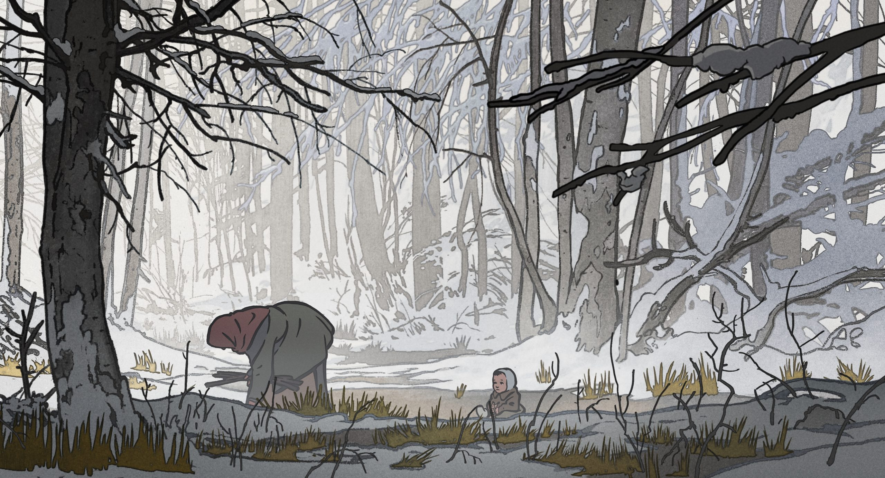
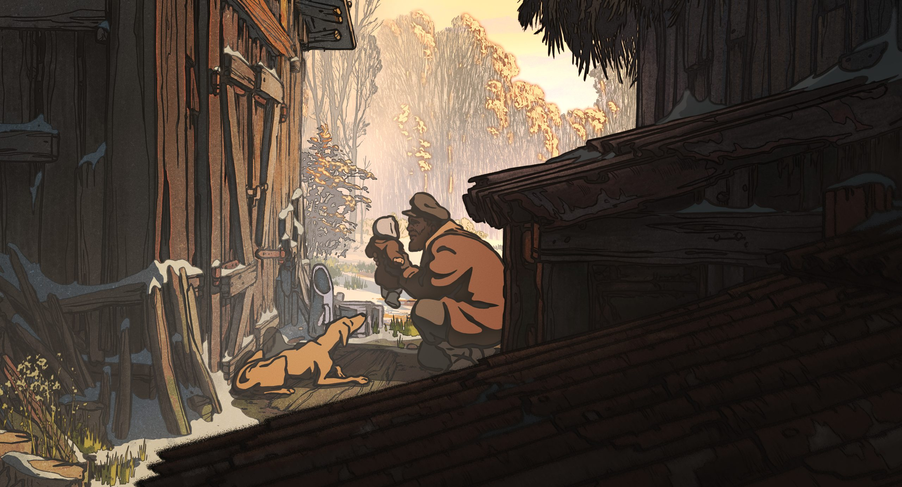
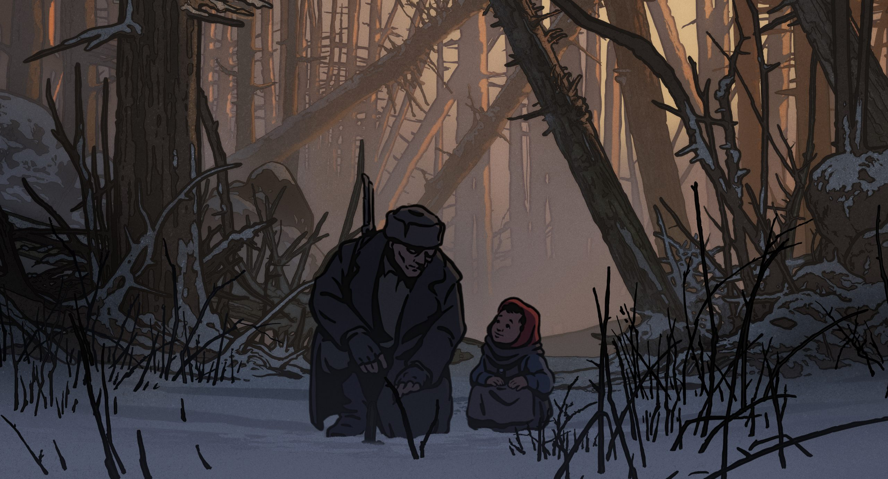
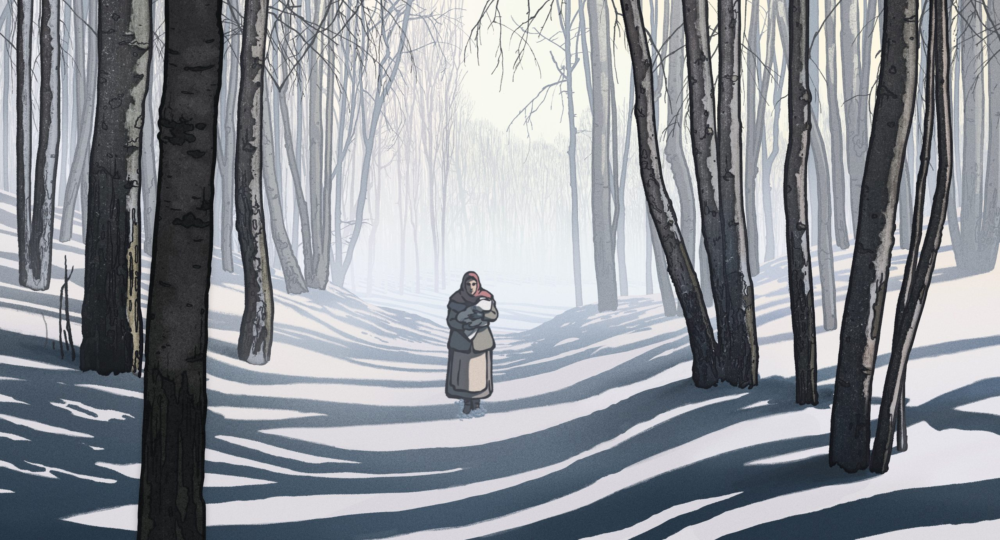
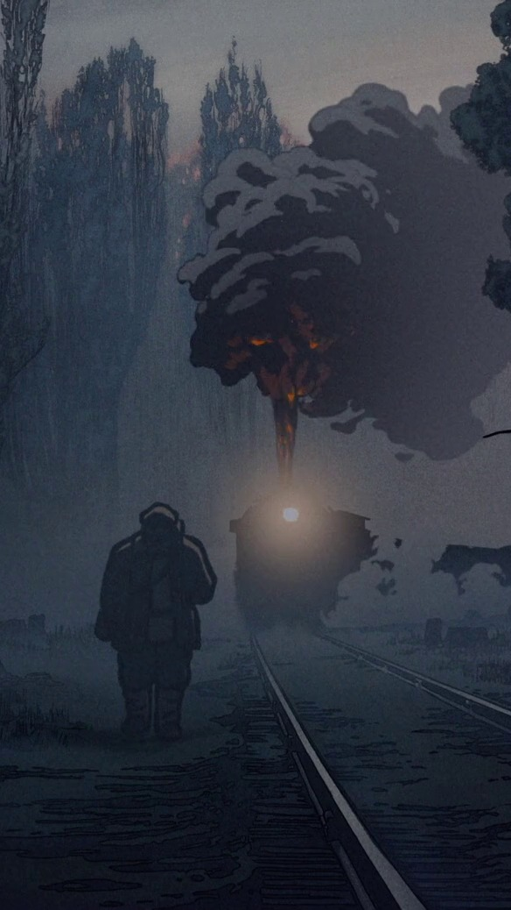
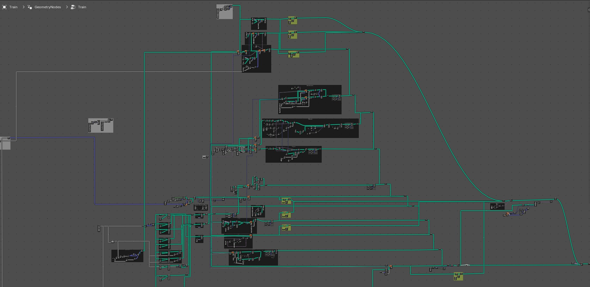

Pipeline Kitsu
Un pipeline de production construit autour de Kitsu, le logiciel de suivi de production, et de son API Zou.
← Projets · Long métrage d'animation · 2021–2024

De 2021 à 2024, j'ai été directeur technique du studio 3.0 sur le film de Michel Hazanavicius : conception du pipeline, développement des outils des artistes et supervision de toute la partie 3D.




Pipeline et outils
Mon premier rôle : mettre en place l'ensemble du pipeline et des outils. J'ai ensuite supervisé la 3D du film, en veillant au respect des process et en aidant les artistes à résoudre leurs problèmes techniques.
Un pipeline de production construit autour de Kitsu, le logiciel de suivi de production, et de son API Zou.
Un launcher maison pour récupérer et publier les fichiers de travail. En une seule étape : envoi sur les serveurs, commentaire, statut et preview sur Kitsu. Fini les erreurs de publish.
Avec Rashid Ghassempouri : l'animation clé, faite sous TVPaint, arrive dans Blender pour l'assistanat avec ses calques et ses images clés.
De nombreux petits outils pour lever les frictions du workflow Grease Pencil et gagner en productivité.
Le monteur reçoit automatiquement la liste des fichiers modifiés, pour les intégrer au montage si besoin.
La production s'étalait sur plusieurs studios : un outil rapatrie automatiquement toutes les dépendances d'un plan de compositing (animation, couleur, décors).
Focus
Le train apparaît dans de nombreux plans, et son allure change selon ce que le réalisateur veut raconter : tantôt imposant, tantôt animal. Nombre de wagons, taille, hauteur, espacement : tout devait rester réglable plan par plan.
Geometry Nodes s'est imposé, et a réglé un autre problème au passage : avec un rig classique à base d'armatures, les performances s'effondraient dès que les wagons se multipliaient. En gérant contraintes et mouvements directement dans les nodes, la scène restait fluide.

